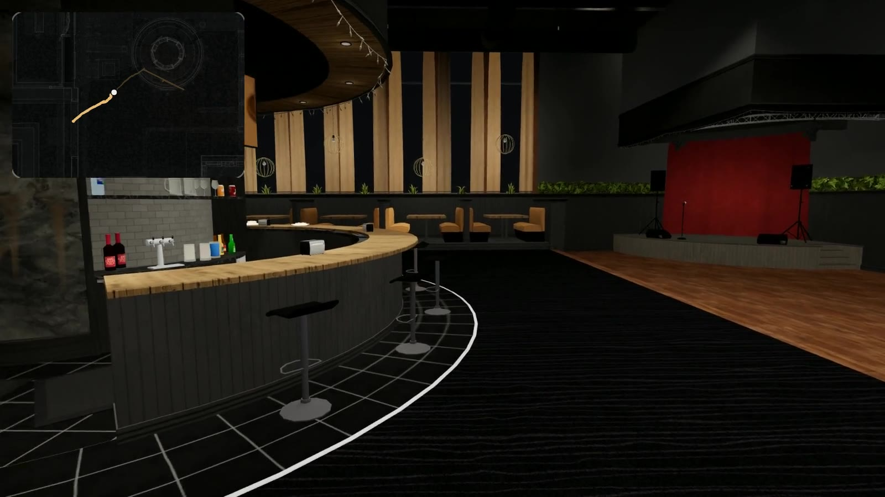

Walking in to the bar counter
Walking in to the back bar
Walking in toward the neon sign
Walking in to the bar stools
Real arrivals replayed from measured head position and orientation inside the restored world. The inset shows each person's path.
Intelligent agents that share environments with people need models not only of the world, but of the people within it. Human behavior entangles three fundamentally different sources of variation: structure imposed by the environment, dynamics that persist across an individual, and intent that changes from one episode to the next. We learn models of people from shared virtual worlds that separate these sources using repeated observations of people acting across sessions and environments. We find that they generalize in strikingly different ways. Semantic scene representations transfer population-level patterns of where people go across worlds substantially better than geometry alone; individual movement style, including pace and path directness, persists across worlds even when destination preferences do not; and uncertainty within an episode is captured by a belief over latent goals that sharpens as a person acts. Richer observations of the person, including pose, head direction, identity, and social context, add little once this structure is represented. Our results suggest that generalizable models of people should separate where behavior is shaped by the world, how behavior reflects the individual, and what must be inferred about a person’s current intent.
Every evening, people walk into a bar scene and nobody gives them a task. Replayed from telemetry inside the building's own geometry, their paths carve the same corridors. We split the crowd into two halves that share no session and no person, and count where each half's walks end on 1 m cells. Both halves draw the same map (ρ = 0.95 in the bar scene, 0.76 in a hangout scene).
Twenty minutes of real arrivals, scrubbed through time.
Where walks end, rising as columns and morphing between the two halves.
The same map is a poor guide to any single walk. Its best guess lands within 3 m of where a walk stops only 5% of the time in the bar scene, and even twenty guesses miss 48% of walks. Watching the walk changes this. A Bayesian goal filter over 512 candidate cells, driven by the walker's heading and the shortest route to each cell, sharpens with every step: after eight seconds the top five candidates include the true goal 40% of the time, against 9% for popularity alone.
One real walk. Columns show the belief over candidate goals; the ring marks where the person actually stopped.
We simulate each person as an agent that runs the same loop once a second: decide whether to stay or go, choose a goal that is either a person or a place, route there, and walk. Only who is present comes from the recording; every decision is the model's own.
Arrivals and departures from the room
A departure hazard for everyone standing still
Head for a person, or for a place
The shortest walkable path there
Step by step, toward the next waypoint
The simulated crowd in the bar scene, rolled out in closed loop.
Fitted only on the bar scene, the simulator runs unchanged in a pub scene it has never seen. The share of people standing alone is reproduced (error 0.07, against 0.60 for a null model), but the simulated crowd is more restless than the real one and drifts to the upper levels.
Real crowd
Simulated, zero-shot
All splits are person-disjoint. Shaded bands are 95% bootstrap intervals over sessions; hover a chart for exact values.
Step inside the four recorded walk-ins in 3D: the restored bar as a colour point cloud, everyone in the room as SMPL-X bodies fitted to their recorded skeletons, and the camera wearer's head camera (open full page). Or read the interactive scroll story built from the same data.

@misc{lewis2026learningmodels,
author = {Lewis, Sean Hardesty},
title = {Learning Models of People from Virtual Worlds},
year = {2026},
}